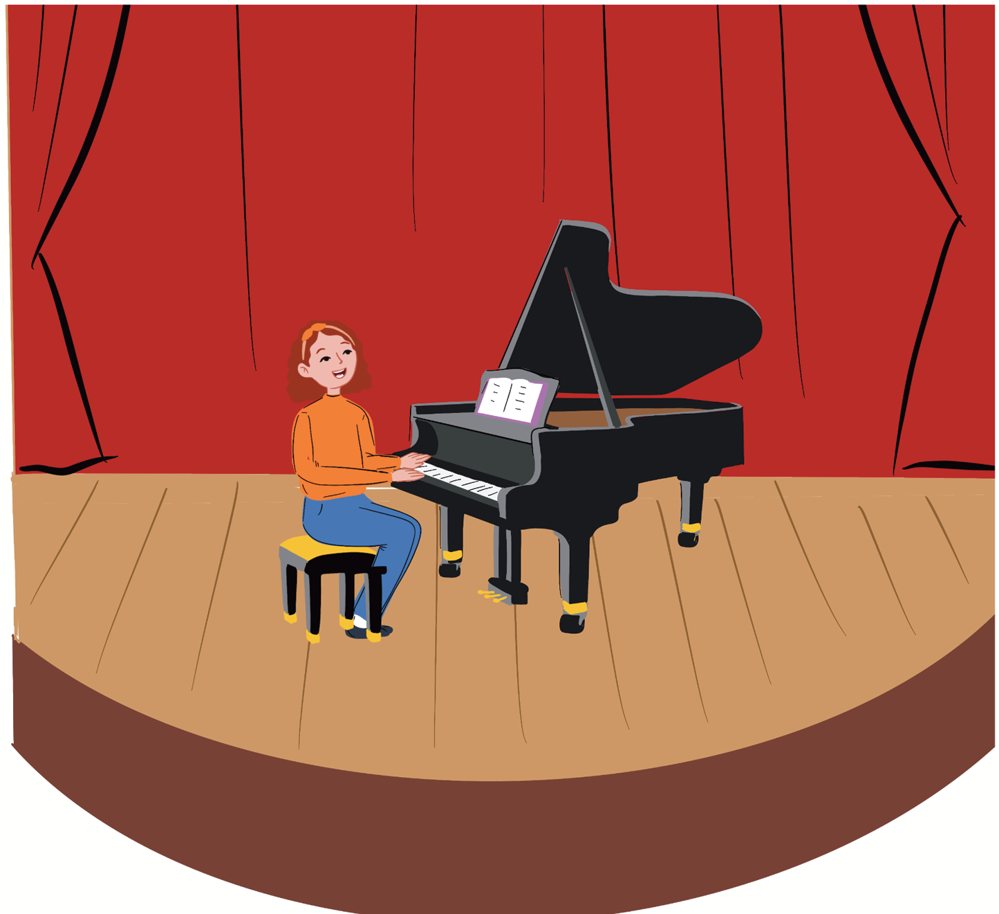
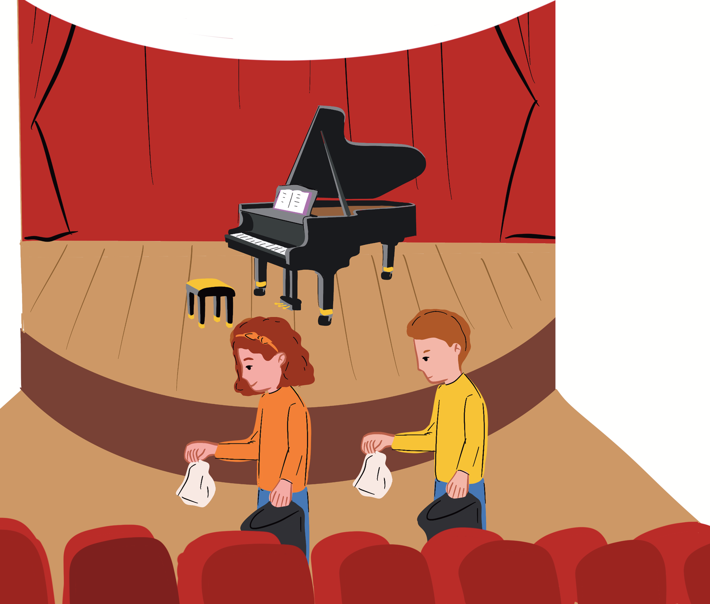

Mjedisi i vendit tim
Kujdesi për higjienën në komunitet
Shoqja e Lumit dhe e Norës, Mira, shkon në shkollën e muzikës, ku mëson pianon. Në një koncert që shkolla e muzikës organizoi, u ftuan të gjithë shokët e shoqet e Mirës. Fëmijët s’kishin marrë pjesë asnjëherë në një ngjarje të tillë më parë.
Mësuesja u kujtoi fëmijëve se duhej të shkonin në koncert në kohën e duhur, të zinin vendet pa bërë zhurmë, të mos flisnin ndërkohë që interpretohej pjesa muzikore, të shikonin dhe të dëgjonin performancën e nxënësve.
Ndërkohë që fëmijët po prisnin në korridorin e shkollës për të filluar koncerti, Ylli, i ulur në një karrige, pasi mbaroi ushqimin, hodhi letrën në dysheme. Edhe Diellza veproi në të njëjtën mënyrë me letrën e saj të kekut.
Ky veprim nuk kaloi pa u vënë re nga mësuesja dhe shumë shokë e shoqe që ishin aty. Ata kujtuan që, ashtu siç mbajnë pastër higjienën personale, duhet të ruajnë dhe ambientet publike. Nëse të gjithë do të hidhnin mbeturinat vend e pa vend, nuk do të mund të shijonin bukuritë në mjedise të ndryshme. Lumi iu drejtua shokëve duke u thënë: “Le të kujdesemi për higjienën gjithandej. Kjo higjienë do të na mbajë të shëndetshëm fizikisht dhe mendërisht”.

